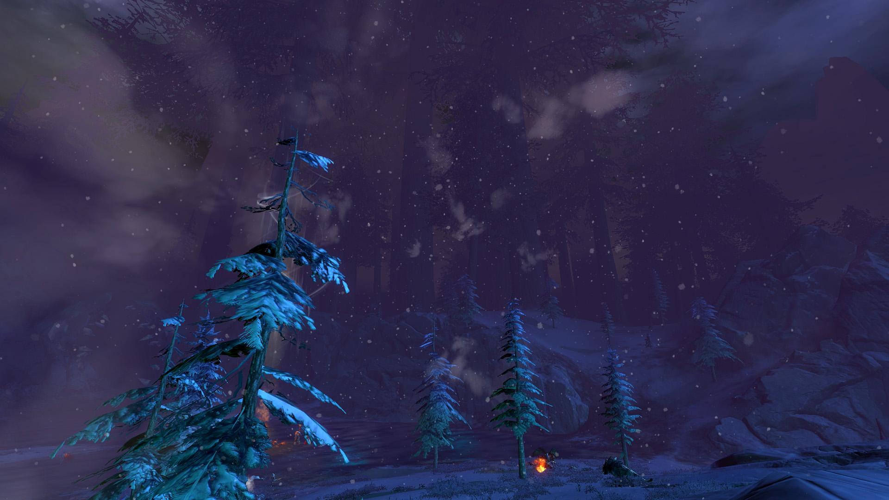
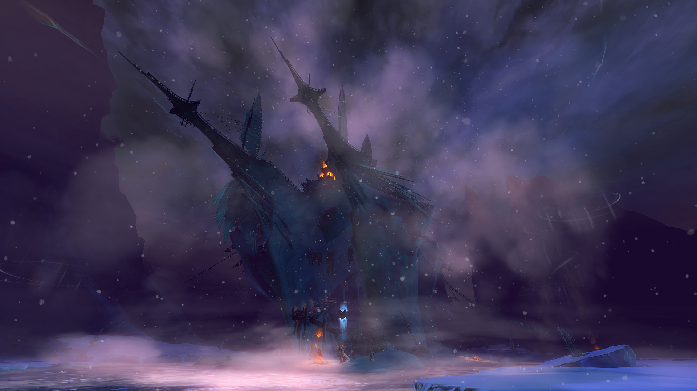
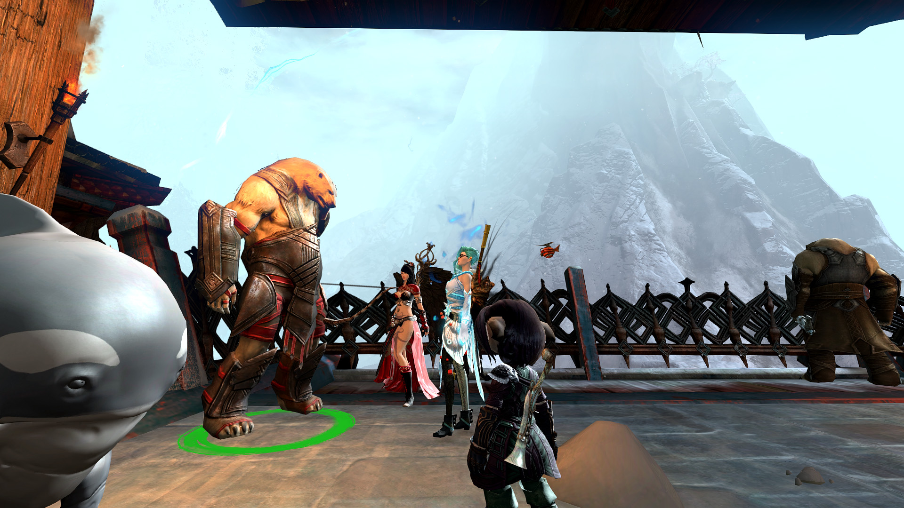
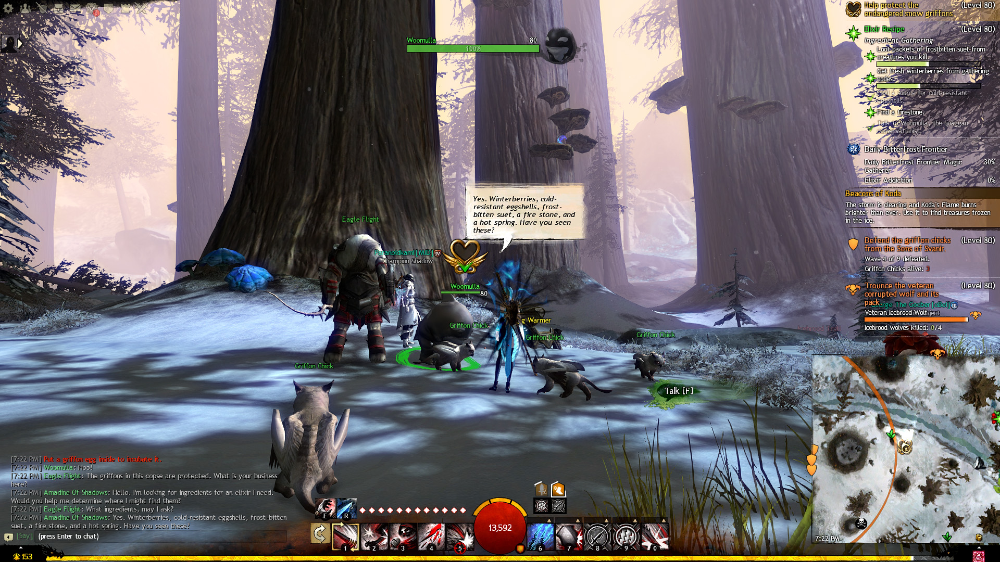
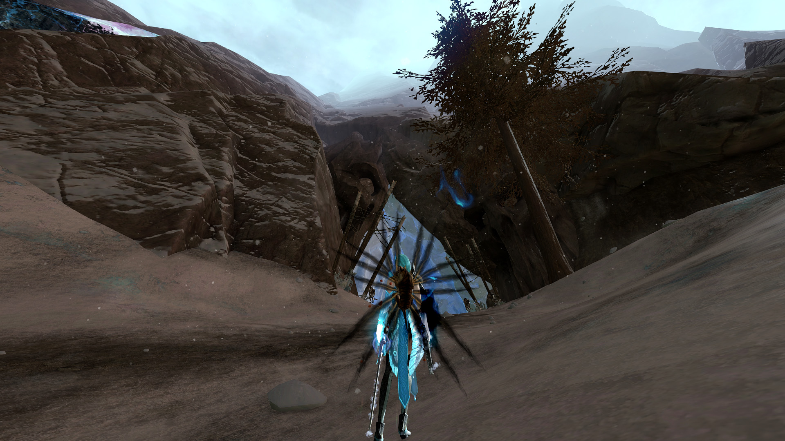
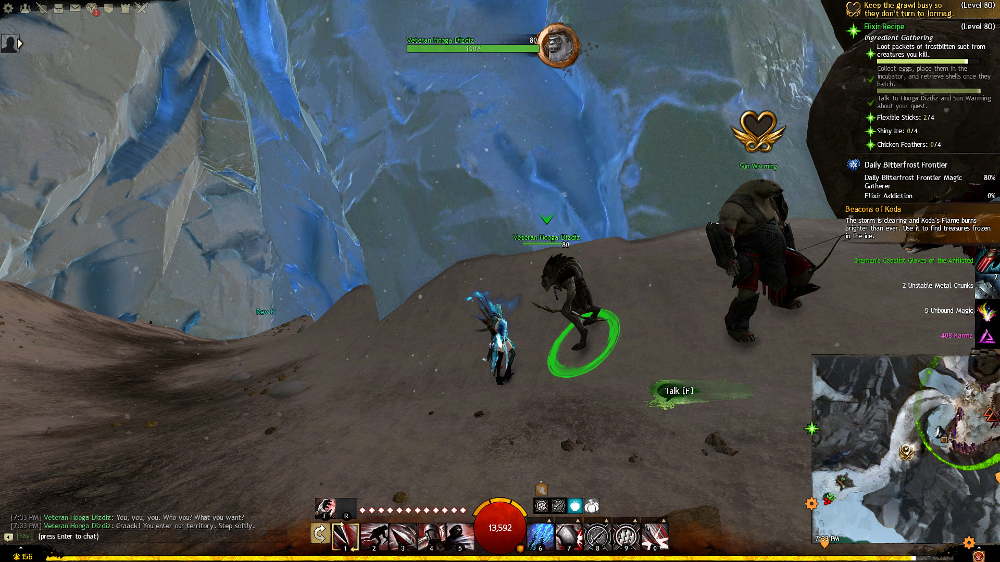
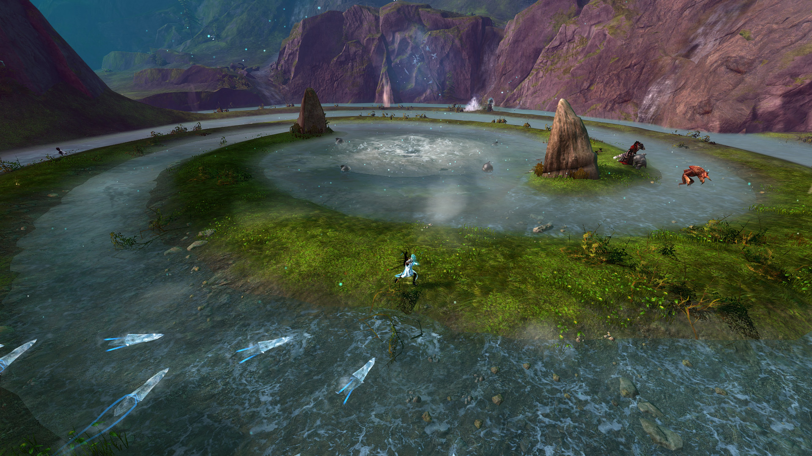
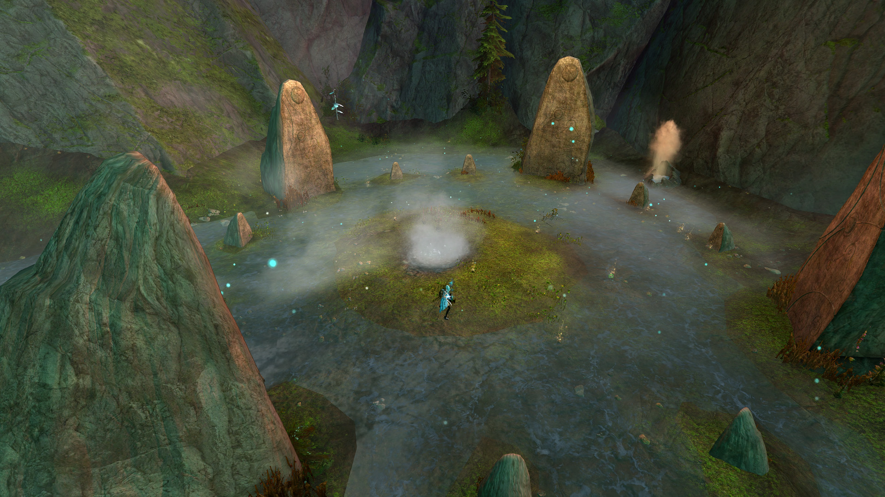

Nov 22, 2016
GUILD WARS 2 LS EPISODE 3 WALKTHROUGH
Bitterfrost Frontier
Upon arriving at Bitterfrost Frontier I found myself in a cold riverway that has been frozen over. Tall trees loom in the background and there are giant braziers to light. The braziers seem to protect me from the raging blizzard and melt frozen objects. Interesting.
My quest marker indicated that I should find Sorrow's Eclipse Sanctuary and speak to its leaders.

A kodan and a quaggan. Coo!

They told me that I must create an elixir that will allow me to penetrate the heart of the bitter cold.
Elixir
The ingredients I needed were winterberries, eggshells, suet, a fire stone, and a hot spring.
I found winterberries from foraging the forest areas and suet from the monsters nearby. There is an incubator near Woomulla where I placed eggs to convert to eggshells.
A cave to the northeast of the forest is where I went next.
Here I spoke to a Hooga Dizdiz about the fire stone. The grawl gave me a stone for doing a few trivial tasks.
The final step is to cook the elixir in the region's hottest hot spring the locals guided me in the right direction.
HOT!